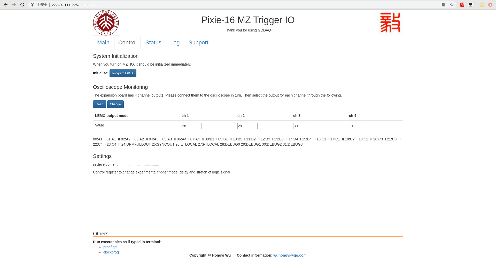
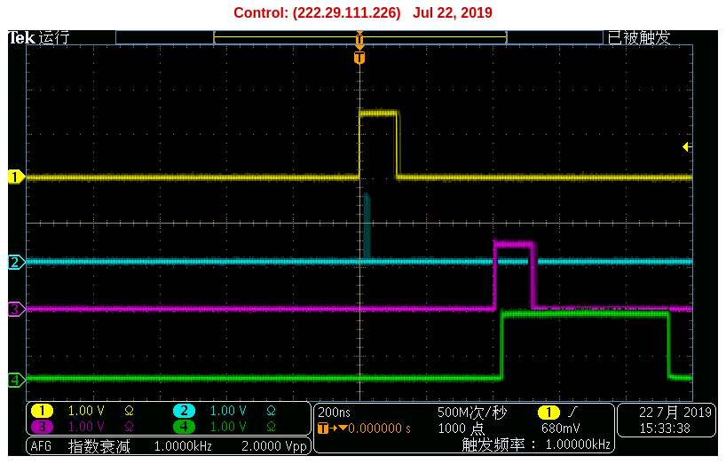

网页控制界面¶

网页¶

control page¶
通过控制寄存器来改变实验触发模式，逻辑信号的延迟与展宽等。
status page¶
当您访问状态页面时，该页面将每 5 秒钟自动刷新一次。
当前，此页面上有五列可监视参数。
第一列的第四行表示允许使用该固体的日期。
第一列的第十五行指示当前 DAQ 的运行时间。
第一列第16行代表 DPMFULL 和总运行时间的百分比。

log page¶
在开发中，此页面将保存状态参数并读取历史参数。
support page¶
该页面提供了一些基本说明，包括XIA说明，PKU说明等。
示波器监视¶
通过 MZTIO 子板将信号输出到示波器。
大多数示波器只有 4 个通道，因此我们的监视器设置默认设置为 4 个通道。 如果要同时监视 8 个通道，则可以用 2 台示波器完成。
当然，可以通过修改控制寄存器来切换监视信号。有关如何监视不同信号的说明，请阅读特定实验的说明。
下图是示波器监视的示例。线 1 表示触发逻辑信号，线 2 表示触发逻辑信号10倍分除之后的结果，线 3 表示线 1 延迟 400 ns 后的信号，线 4 代表线 3 展宽到 500 ns。
